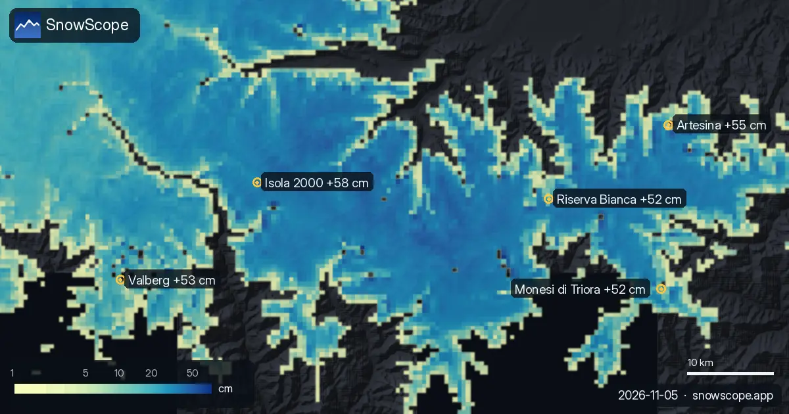
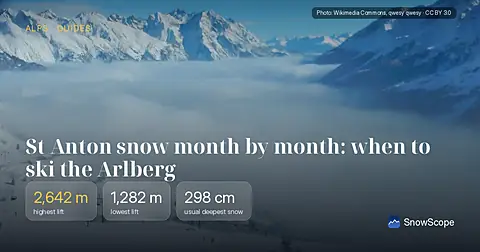

58cm fresh powder in Alps; best weeks peak in February
Isola 2000 collected 58 centimetres of fresh snow in the past 72 hours, with other southern Alps resorts receiving 52 to 58 centimetres. More powder is forecast over the next few days, but the season's best snow weeks historically peak in early February.
See the live snow forecast for Isola 2000 in the SnowScope appSnow depth, powder alerts and the 3D map, free.
Fresh snow surge across south
Isola 2000 received 58 centimetres of fresh snow according to our model, with Artesina at 55 centimetres, Monesi di Triora at 52 centimetres, and Riserva Bianca also 52 centimetres. Satellite data confirm: Isola 2000 had no snow on 30 October and now carries 19 centimetres on upper slopes at 2,601 metres. The storm was concentrated geographically, with tracked cells near Isola 2000, Crissolo, and Garessio 2000. At regional scale, the change is dramatic: snow cover expanded from 35,390 to 46,450 square kilometres in just 72 hours. The count of Alps resorts with any snow depth rose from 753 to 785.
| Resort | Snow depth | New snow, 72 h | Coming, next days | Top |
|---|---|---|---|---|
| Isola 2000 | 19 cm | 58 cm | 7 cm | 2,601 m |
| Artesina | 22 cm | 55 cm | 9 cm | 2,091 m |
| Valberg | 12 cm | 53 cm | 5 cm | 2,012 m |
| Monesi di Triora | 16 cm | 52 cm | 8 cm | 2,157 m |
| Riserva Bianca | 20 cm | 52 cm | 9 cm | 2,054 m |

Fresh snow easing, but more in short term
Additional powder is forecast over the next few days. Isola 2000 expects 7 more centimetres, Artesina around 9 centimetres, Monesi di Triora about 8 centimetres. The heaviest snow already arrived on 4–5 November. After today, fresh accumulation will be lighter each day. By 8 November, regional snow cover is expected to drop slightly to 31,930 square kilometres as lower-elevation snow begins to settle, though 671 resorts will retain snow depth.
Best powder weeks peak in February
Here is strategic information: our historical data shows that the best snow weeks at Isola 2000 are weeks 6, 7, and 8 of the season—early to mid-February. We are currently in early November. Fresh powder today is excellent for early-season runs, but depths are modest by winter standards. At mid-elevation (2,214 metres), 14 centimetres of modelled snow ranks deeper than 43 of the past 46 winters on this calendar date. This shows how thin November typically is. If you are planning a trip to find the season's deepest base and most reliable coverage, February is the month to target.
Altitude is key; freezing level helps
Snow depth drops with altitude. Isola 2000's summit (2,601 metres) holds 19 centimetres; mid-slopes (2,214 metres) show 14 centimetres; lower areas have much less. Artesina illustrates the gradient sharply: summit (2,091 metres) has 16 centimetres, mid-terrain (1,446 metres) only 2 centimetres, base (801 metres) bare. For continuous riding, ski above 2,000 metres. Below that, expect mixed terrain with rocks showing. Freezing levels today range from 2,200 to 2,430 metres at Isola 2000, so powder at the top will preserve. By 7 November, the freezing level falls to 1,990–2,270 metres, introducing colder air at mid-elevations and improving snow stability overnight.
Models grounded in measured data
Our snow estimates come from a model applied across the region. Early November weather stations recorded 8–11 centimetres of fresh snow per day at elevations of 1,618 to 2,220 metres. These point measurements align with model outputs, lending credibility. The current 72-hour event occurred after those station readings, so ground instruments have not directly verified this latest spell. Satellite pictures, however, provide confirmation: Isola 2000 appeared snow-free on 30 October and now shows cover on 5 November.
Tips for skiers
- Ski above 2,000 metres for continuous snow depth; expect rocks and mixed terrain below that height.
- Check the official avalanche bulletin if venturing off marked slopes; fresh snow on steep terrain can slacken.
- Best historical snow weeks are February weeks 6, 7, and 8; plan a February trip if you want the season's deepest base.
- Freezing level drops to 1,990 metres on 7 November, bringing colder nights; fresh snow will consolidate better after that date.
About these numbers
Resort snow depths are the deepest snow on the resort's upper slopes from the SnowScope snow model (about 1 km, run of 5 November); they are estimates for an area, not a measurement at one point. Station values are measurements on the date shown. Forecasts can change. Always read the official avalanche bulletin before going off-piste.
Official avalanche bulletins: EAWS (Alps)
Cite this report
For research, teaching or the press: the numbers and charts are free to reuse under CC BY 4.0 with this citation.
SnowScope (2026), 58cm fresh powder in Alps; best weeks peak in February, https://snowscope.app/blog/en/2026/11/alps-fresh-snow-powder-alert-5-november-2026.html, accessed 2026-11-05
SnowScope (Atlas Labs). (2026, November 5). 58cm fresh powder in Alps; best weeks peak in February. SnowScope snow reports. https://snowscope.app/blog/en/2026/11/alps-fresh-snow-powder-alert-5-november-2026.html
BibTeX
@misc{snowscope2026alpsfreshsnowpowderalert,
author = {{SnowScope (Atlas Labs)}},
title = {58cm fresh powder in Alps; best weeks peak in February},
year = {2026},
month = nov,
howpublished = {\url{https://snowscope.app/blog/en/2026/11/alps-fresh-snow-powder-alert-5-november-2026.html}},
note = {Published 2026-11-05 10:27 UTC; accessed 2026-11-05}
}· CC BY 4.0 · Methods, data and tools →
Isola 2000: snow and temperature by height, this winter vs last (tools) →
Follow Isola 2000
Free: a message when fresh snow is coming, and the forecast every morning.
More snow reports

Zermatt in numbers: where the snow lasts, the safest months and how to reach the car-free village, from 46 past winters of snow data.

Snowfall in Val Thorens, 13 November 2026: 27 cm fell at the top (3175 m) and 17 cm at 2498 m over seven days; snow depth is 50 cm and 8 cm. Next seven days: 86 cm at the top, 73 cm at 2498 m, snow line well below the village. Usual snowfall season from 46 winters.

St Anton and Ski Arlberg through the winter: how deep the snow usually is each month at three heights, from 46 past winters.